Explore Denpasar
A Brief History
Denpasar became capital of Bali province after the Puputan resistance of 1906 and grew as the island's administrative and transport hub. Puri Agung palaces, markets, and museums sit between Hindu temple districts and modern government offices. The city links southern Bali's beaches and resorts with highland villages, recording how Dutch colonial rule, independence, and tourism reshaped Balinese civic life.
Attractions Map
Top Sights & Activities
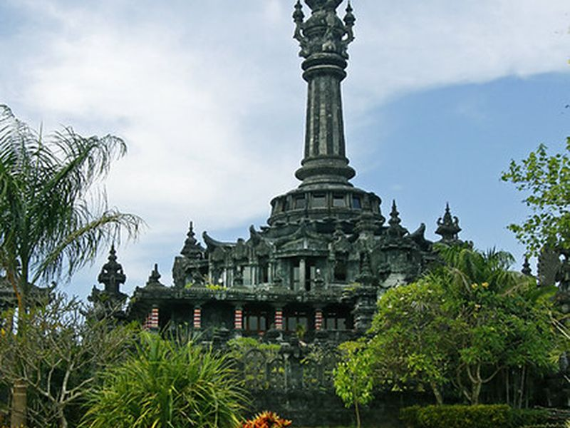
Monumen Tragedi Kemanusiaan
The Bali Bomb Memorial, also known as the Ground Zero Monument, is a poignant and well-maintained site in Kuta, Indonesia. It serves as a symbol of human resilience in the face of terror and commemorates the tragic 2002 bombings. The memorial features a name wall listing the 202 known victims from various countries, floral offerings, and a ring of flags. Visitors can spend contemplative moments paying their respects to those who lost their lives in this senseless act of violence.
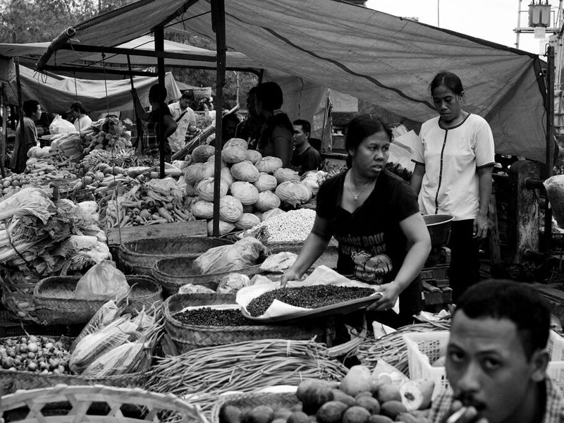
Beachwalk Shopping Center
Nestled in the heart of Kuta, Beachwalk Shopping Center is a stylish open-air mall that offers a unique shopping experience. The beautifully designed complex boasts an open concept with lush greenery and a serene atmosphere, making it an ideal place to indulge in retail therapy. Visitors can explore a wide array of popular international brands such as Adidas, H&M, Zara, Kate Spade, and more.
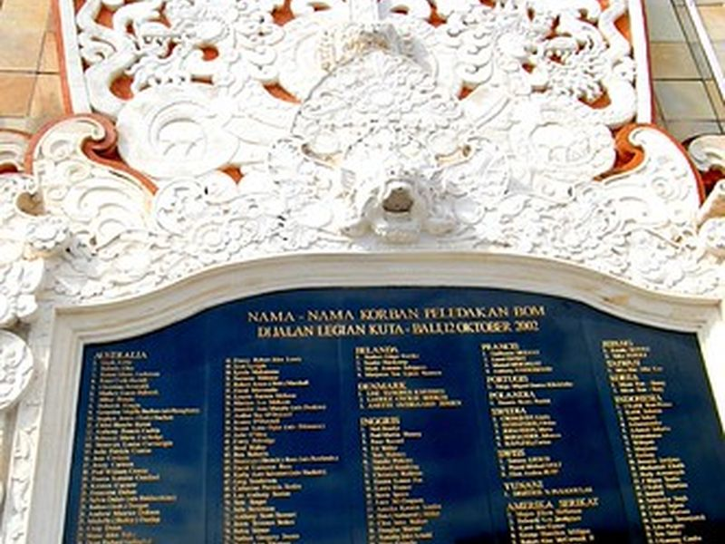
Satria Gatotkaca Park
Satria Gatotkaca Park, located in Kuta, Bali, is a picturesque outdoor space named after a legendary Indonesian hero. The park boasts paved paths, flower beds, fountains, and a striking statue of the mythical hero Gatotkaca. It is strategically positioned near the airport and features night lights. Despite traffic congestion in the area, it remains a popular gathering spot for locals and tourists alike.
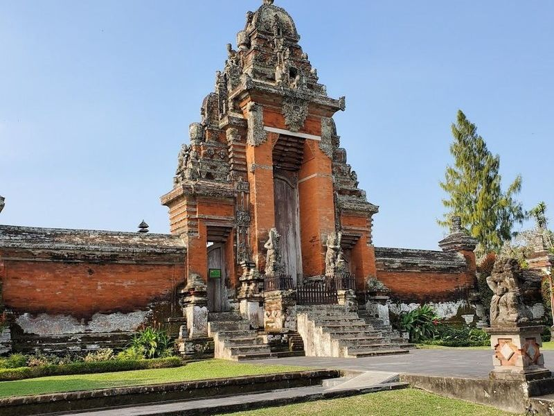
Taman Ayun Temple
Taman Ayun Temple, also known as Mengwi Temple, is a Hindu temple and garden complex located in the village of Mengwi, Bali. Surrounded by canals, this picturesque site features shrines, pavilions, and ponds. Its strategic location makes it easily accessible from other popular tourist destinations in Bali. Built in 1634 by the King of Mengwi and later restored and enlarged in 1937, the temple's pool creates a floating impression around the complex.

Patung Bayi, Sukawati, Gianyar
The Ubud Art Market is a bustling hub of Balinese craftsmanship, offering a diverse array of unique items such as handicrafts, batik, accessories, and clothing. Visitors can explore the market's offerings and haggle with vendors for one-of-a-kind souvenirs. It's recommended to compare prices across different stalls, negotiate with sellers, and inquire about the authenticity of goods.
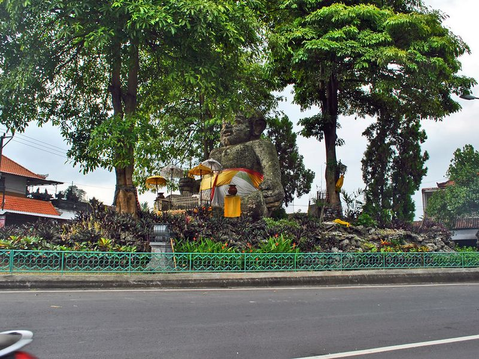
Tegenungan Waterfall
Tegenungan Waterfall is a natural wonder nestled in the heart of Bali, just a short drive from Ubud. This picturesque waterfall cascades through lush jungle surroundings, creating an idyllic setting for visitors. While it’s popular waterfalls on the island and can get quite crowded, especially during peak hours, visiting early in the morning offers a more tranquil experience before the crowds arrive.
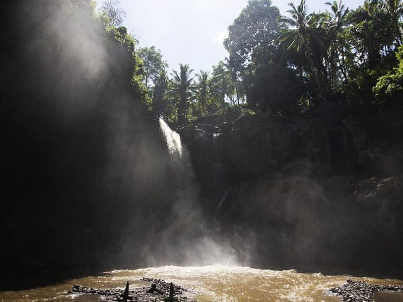
Pura Puseh Desa Batuan
Pura Puseh Desa Batuan, a Hindu temple dating back to the 11th century, is located in the village of Batuan. The temple features intricate stone carvings and sculptures, including a five-tiered Candi Bentar gateway and thatched-roof shrines adorned with floral motifs and statues of Hindu deities. Visitors are required to wear sarongs for entry. The temple also hosts anniversary celebrations known as Piodalan.
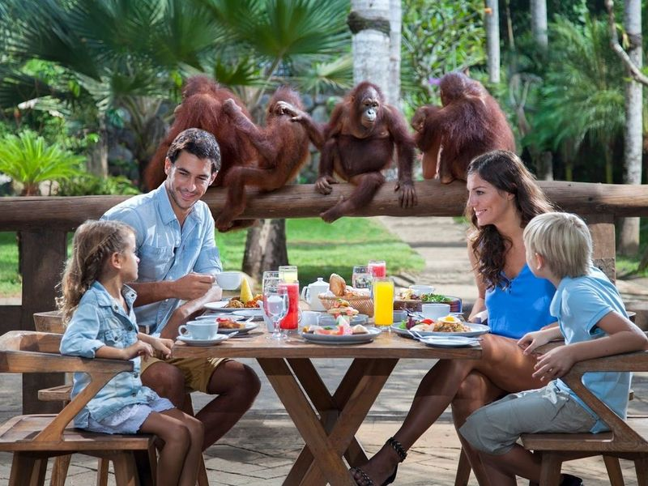
Bali Zoo
Bali Zoo is a captivating destination for families and wildlife enthusiasts alike, nestled in a sprawling 12-hectare tropical paradise. Since its inception in 2002, this zoo has been dedicated to animal conservation and education, showcasing over 600 exotic animals from more than 65 species. Visitors can encounter majestic elephants, playful orangutans, and even African lions while enjoying interactive experiences that bring them closer to nature.
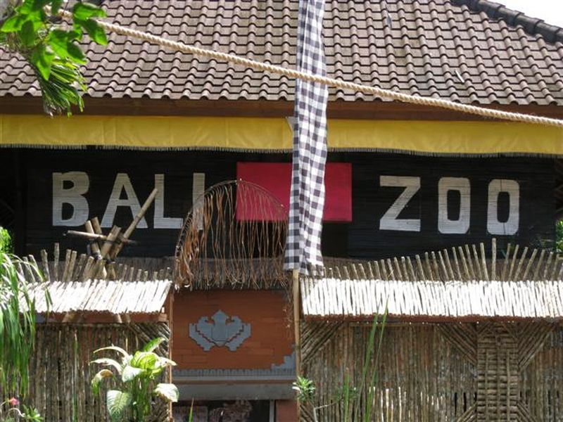
Bali Bird Park
Nestled in the village of Batubulan, Bali Bird Park is a haven for bird enthusiasts. Spanning 2 hectares, it features over 1000 exotic birds and around 250 reptile species, including the renowned Komodo dragon. Visitors can enjoy captivating bird shows, feedings, and displays while taking leisurely strolls through the park's lush surroundings.
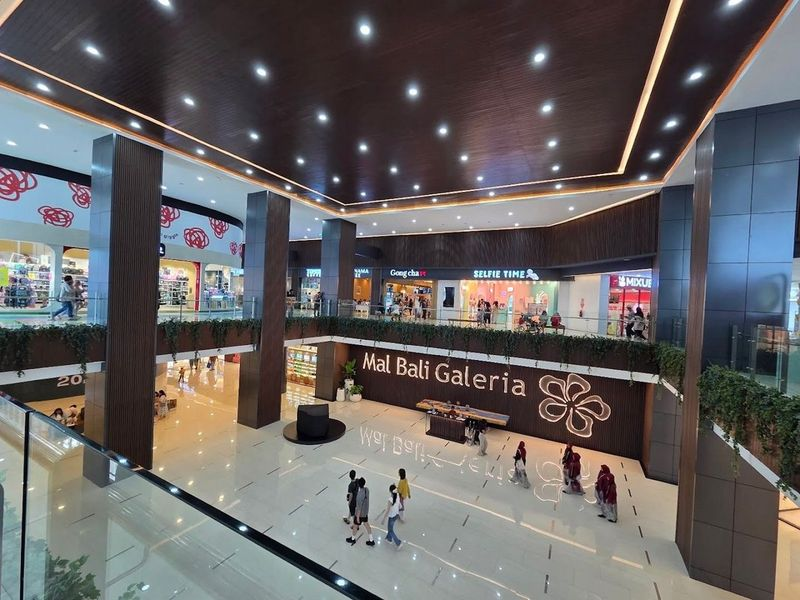
Mal Bali Galeria
Mal Bali Galeria, located on Pass Ngurah Rai in Kuta, is a small and cozy mall with a tropical and exotic theme. It features department stores, boutiques, a supermarket, eateries, and a movie theater. The mall underwent upgrades over the years and now includes an ACE Hardware store, a Hypermart supermarket, international fashion brand stores, and an expanded parking area.
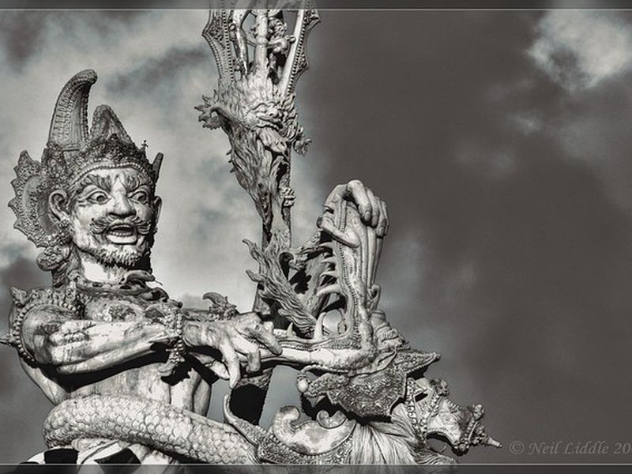
Patung Dewa Ruci
Patung Dewa Ruci, also known as Dewa Ruci Bali, is a renowned statue in Kuta that captivates tourists with its depiction of Bhima from Hindu mythology retrieving the water of life. The intricate carvings and towering presence of the sculpture make it an sight to behold. Located near Sunset Road and By Pass Ngurah Rai, this majestic statue has been rejuvenated with lighting effects, making it a great spot for night photography.
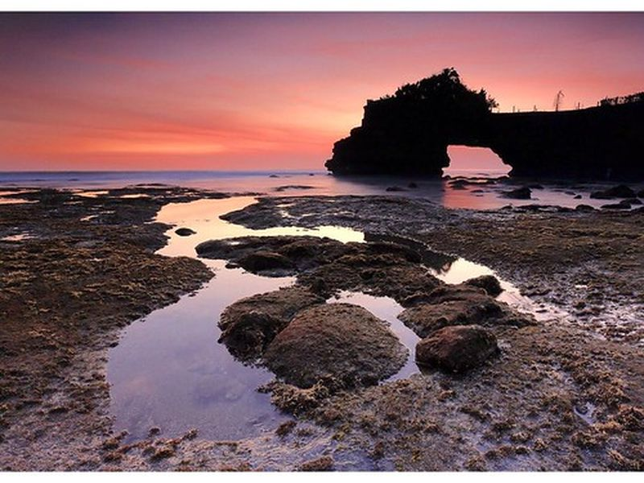
St. Francis Xavier Catholic Church
St. Francis Xavier Catholic Church in Kuta is a beautiful church located opposite Lippo Mall. The parishioners are known for their warm welcome, and the Mass service is regarded. It's important to note that English mass is only available on Sundays at 6pm, while all other masses on weekdays and weekends are conducted in Bahese. Additionally, there's a dress code to adhere to when attending mass.
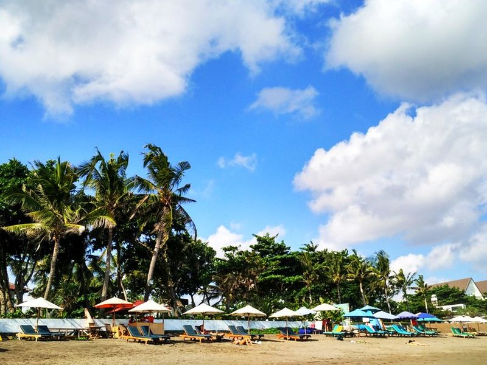
Waterbom Bali
Waterbom Bali is a sprawling water park spanning 3.8 hectares, offering an array of rides and attractions suitable for all ages. It's a top family-friendly destination in Kuta, Bali. The park features exhilarating water slides, games, gardens, pools, and the steepest waterslide in Asia called The Climax. Visitors can also enjoy the Lazy River, Funtastic, Twin Racers, Fast N Fierce, Smashdown and more.
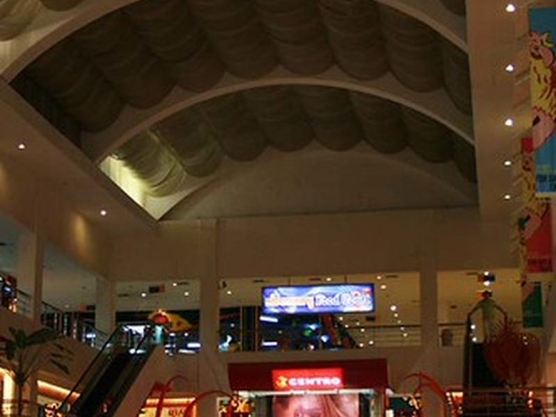
Discovery Mall Bali
Discovery Mall Bali is a renowned beachfront shopping complex located in Badung, Bali, Indonesia. It is known for being shopping centers in the province and offers a wide range of department stores, boutiques, restaurants, and cultural events. The mall's spacious building houses popular tenants such as Centro department store, Etude House, Fipper, Wakai Shoes, and electronic stores.
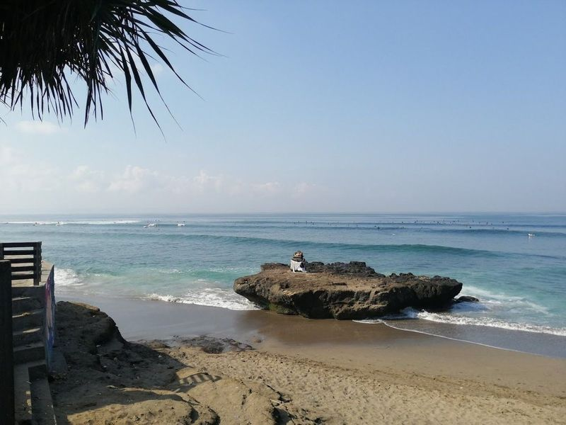
Pantai Batu Bolong
Pantai Batu Bolong is a well-known sandy beach that attracts surfers and beachgoers alike. It's conveniently located near shops and restaurants, making it a popular spot for those looking to relax by the sea. The area also offers views of the ocean, providing visitors with an ideal setting to unwind and enjoy the natural beauty of Bali.
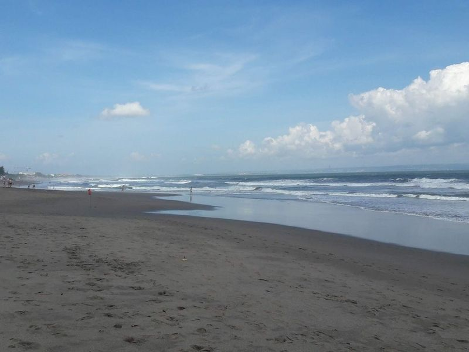
Pantai Berawa
Pantai Berawa is a popular sandy beach known for its great waves, attracting surfers and offering sunset views. It is also home to a private club with top-notch facilities such as restaurants, bars, a library, kids club, water park, tennis and squash courts, swimming pool, gym, and wellness center. Additionally, the area features an exclusive 18-seater omakase restaurant that offers a unique dining experience blending traditional Japanese cuisine with modern gastronomy.
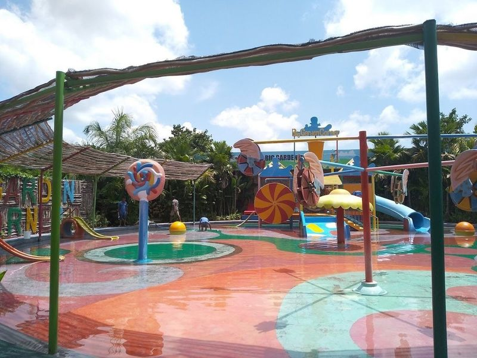
Big Garden Corner
Big Garden Corner in Denpasar is a must-visit for nature lovers. The beautifully landscaped sculpture garden features a diverse collection of stone sculptures set amidst lush green grass and vibrant blossoms. Visitors can relax at the on-site restaurant offering traditional Balinese cuisine. Families can enjoy various recreational activities, including a playground and a butterfly garden.
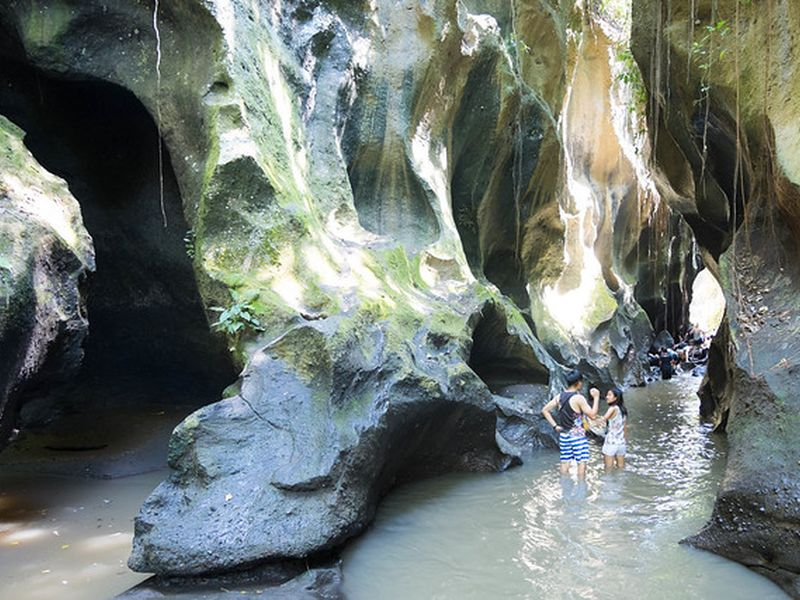
Bali Festival Park, Padang Galak
Bali Festival Park, Padang Galak is an abandoned theme park from the 1990s located just outside of Sanur. The park is now a haven for urban explorers and graffiti enthusiasts, with nature and local artists having completely taken over the structures. Visitors are advised to watch their step due to slippery surfaces and bring mosquito repellent. The site offers around 100 impressive graffiti murals against the backdrop of the ocean, making it a must-visit for art lovers.
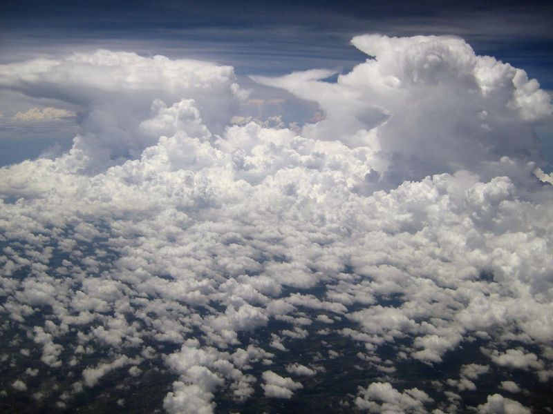
Satya Dharma Temple
The Satya Dharma Temple is a beautiful temple with peaceful surroundings perfect for Buddhists to pray. The temple is always clean and staffed with volunteers who are happy to assist first timers. At night, the temple is illuminated by beautiful lights which makes it more appealing.
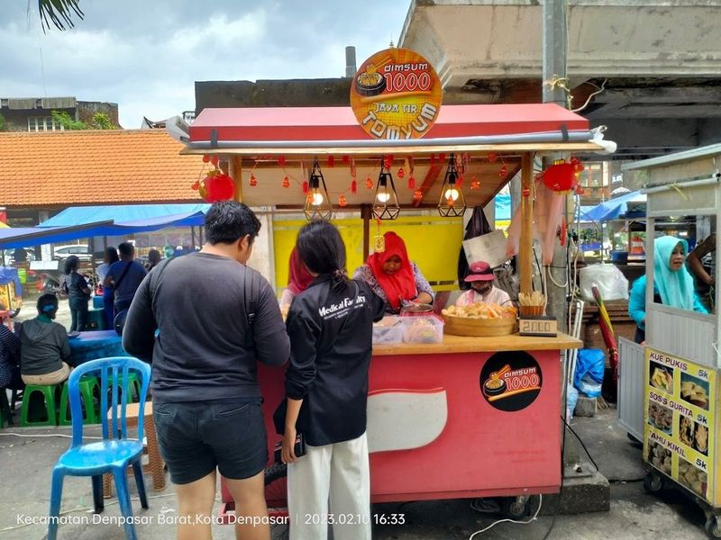
Badung Market
Badung Market is a bustling traditional open-air market located in the heart of Denpasar. It offers a wide range of products including groceries, clothing, souvenirs, and more. The market is popular among locals for its authentic Balinese shopping experience and is not just a tourist attraction. Vendors selling sarongs, fruits, vegetables, and meat can be found here.
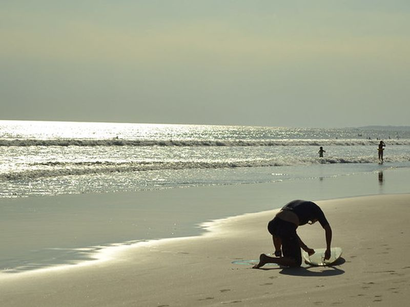
Agung Jagatnatha Temple
Agung Jagatnatha Temple is a Hindu temple complex located in Denpasar, Bali. It was founded in 1953 and is dedicated to the supreme god, Sanghyang Widi Wasa. The temple features Balinese architectural style and is adorned with carvings of lotus flowers and scenes from the Hindu epics Ramayana and Mahabharata. The central shrine is ornate, surrounded by a leafy courtyard guarded by stone statues.
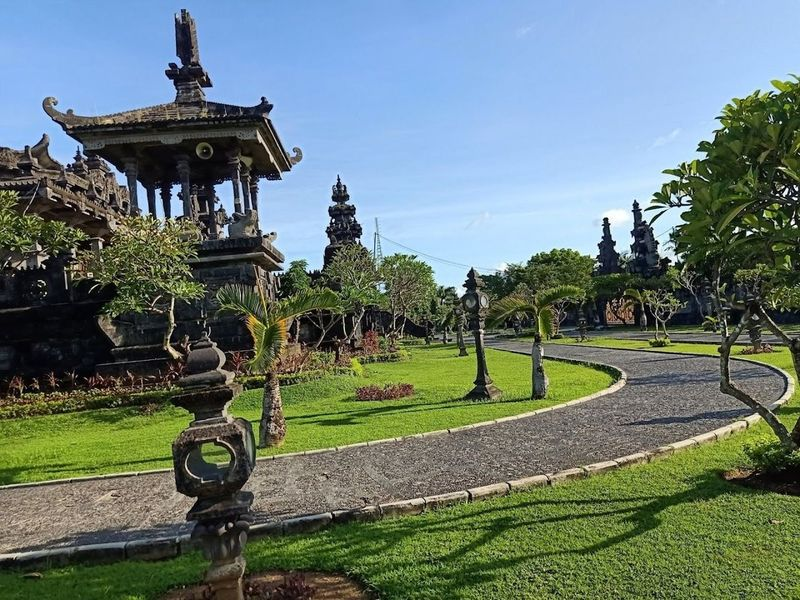
Bajra Sandhi Monument
Bajra Sandhi Monument is a significant landmark in Denpasar, Bali, located in the Lapangan Puputan Margarana park. The monument, designed to resemble a priest's bell, symbolizes Indonesia's Declaration of Independence with its architectural features. The upper floor houses 33 dioramas depicting episodes from Balinese history. Visitors can relax and enjoy the city atmosphere around the monument and engage in activities like jogging, basketball, and football.
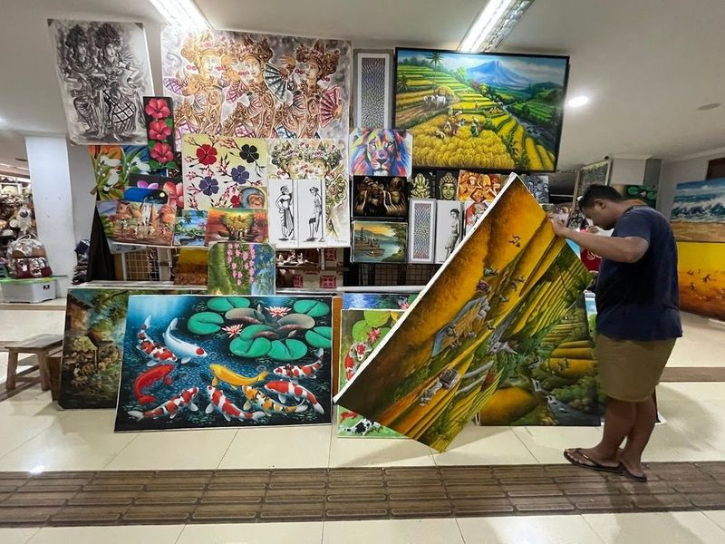
Sukawati Art Market
Sukawati Art Market, also known as Pasar Seni Sukawati, is a vibrant and historic marketplace located in Bali. It is renowned as the oldest art market on the island and is situated in a village known for its traditional artists. The market offers a wide array of items such as apparel, jewelry, souvenirs, sculptures, paintings, and more at great bargain prices.

Hidden Canyon Beji Guwang
Hidden Canyon Beji Guwang is a serene natural spot tucked away in Banjar Wangbung, Gianyar City. The area features pools, waterfalls, and intricately carved rocks formed by water erosion. This picturesque location has gained popularity among photographers for its rock formations and vibrant color gradients. The canyon is surrounded by steep cliffs reaching approximately 30 meters in height, with a bluish river flowing through it.
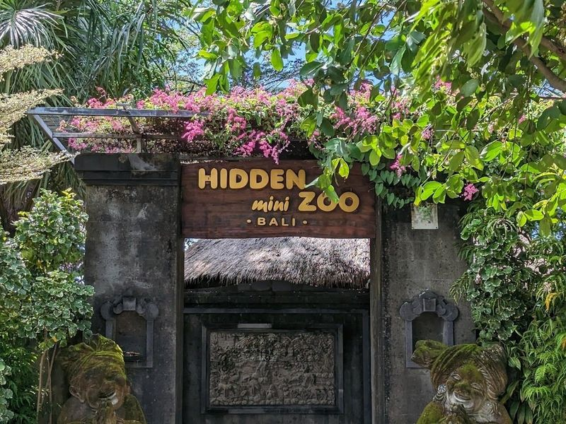
Hidden Mini Zoo Bali
The Hidden Canyon Mini Zoo in Bali offers a unique opportunity to witness and interact with exotic wildlife. Located in Guwang Village, Sukawati Gianyar, this mini zoo provides intimate encounters with carefully selected endemic animals. This attraction is perfect for families looking to explore the wonders of Bali. Visitors can touch and hold the animals while capturing memorable photos without worrying about their health or wellbeing.
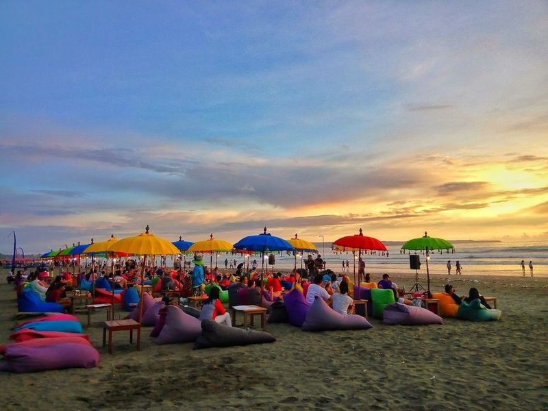
Double Six Beach
Double Six Beach is a popular destination for travelers seeking a relaxed atmosphere and vibrant entertainment. The beach offers umbrella rentals, live music, and a laid-back ambiance that appeals to families, couples, and young visitors alike. Renowned for its sunsets and excellent surf conditions, the beach also features charming bars such as La Plancha.